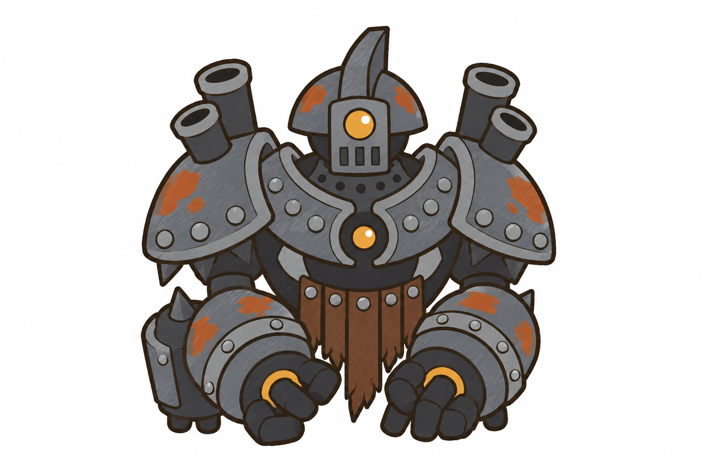
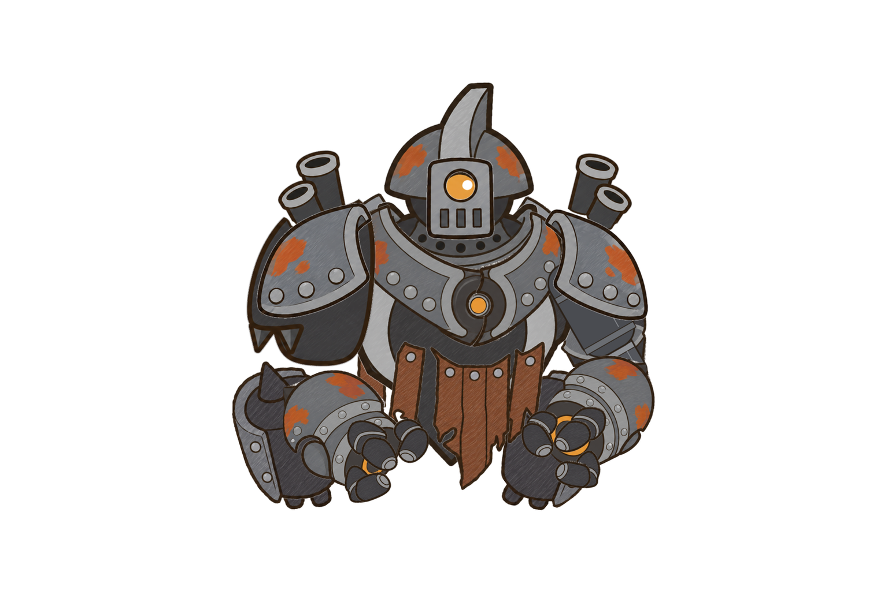
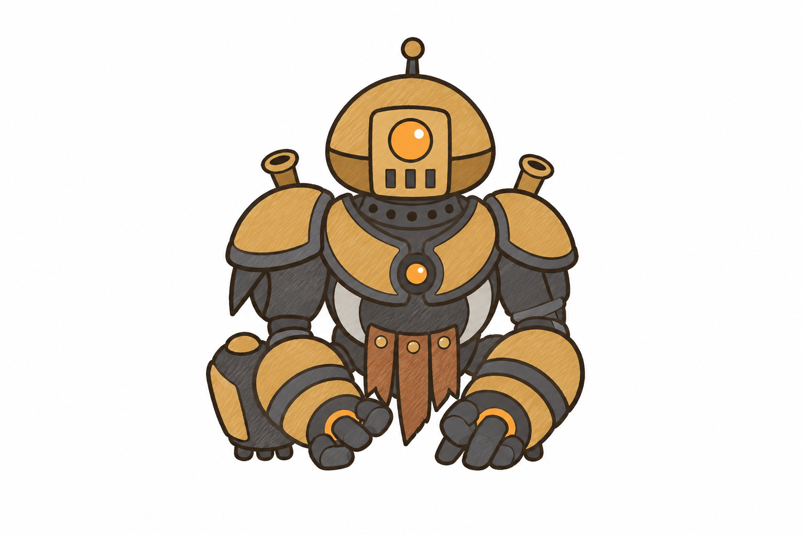
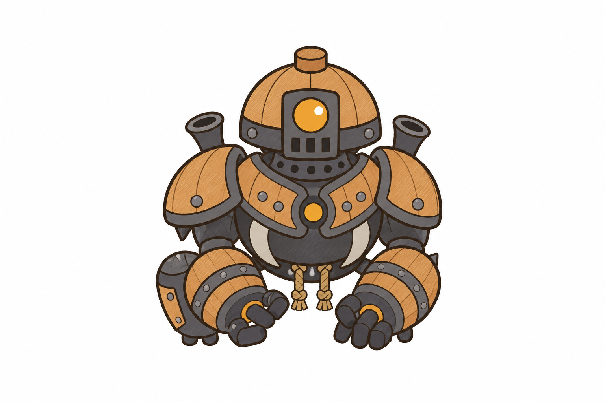
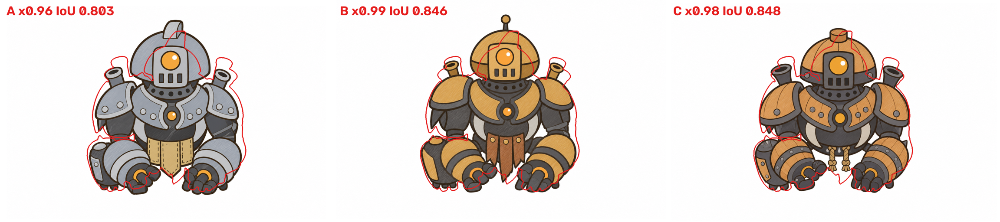

Robot hủy diệt cổ đại — DẠNG 1 NON, concept lượt 1

Dạng 2 đã duyệt (robot sắt cổ gỉ sét): để so

Bố cục dạng non dựng từ rig (giáp vai, cẳng tay, ống xả nhỏ lại; da tạm dạng 2)A robot con thép mới: thép sáng không gỉ, đầu vòm to tròn, vây thành mẩu nhỏ, mỗi vai một ống xả, giáp vai tròn hai đinh, vải bố vàng nhạt ở eo (GPT vẽ liền một tấm)

B robot đồng thau học việc: đồng thau vàng ấm + khớp sắt sẫm, ăng-ten có quả cầu thay vây, mỗi vai một ống còi đồng, dải da nâu sáng

C robot gỗ đai sắt sơ khai: tấm gỗ sáng ghép + đai sắt đinh tán, chốt gỗ thay vây, ống phễu sắt, dây thừng thắt nút ở eo

Viền đỏ = hình bóng bố cục rig chồng lên A, B, C (độ khớp 0,80 / 0,85 / 0,85; lệch chủ yếu ở đầu, cố ý vẽ to hơn)